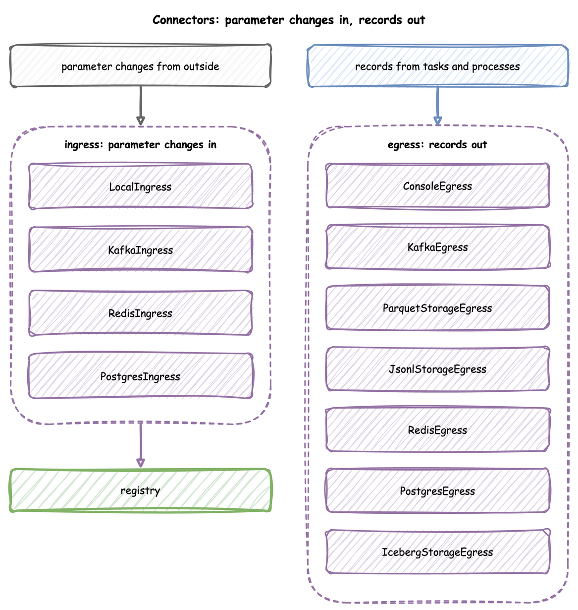
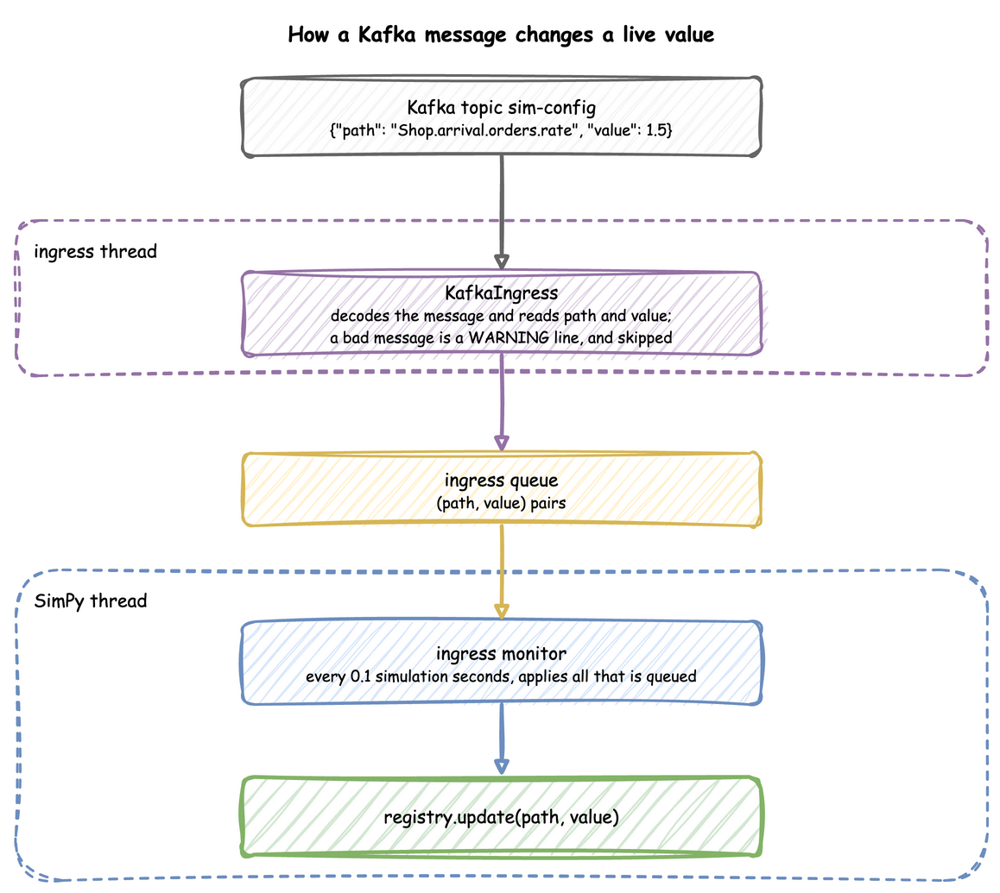

Ingress
An ingress connector brings parameter changes into a running simulation from outside: from Kafka, Redis, PostgreSQL or a local schedule. This page shows each connector, the message it reads, how to send one, and when the change lands.
What It Is
An ingress connector listens to a source while the run goes on. Every message it reads is one change: a registry path and its new value, the same two names a scenario step uses. The change reaches the registry, and the simulation follows it, as Live Parameters describes. Four ingress connectors bring changes in. The seven connectors described on Egress write records out:

How to Use It
Each connector is attached with add_ingress in the builder, passed to env.setup_ingress in the low-level API, or listed under ingress in a blueprint with its type and config, as YAML Format shows.
| Connector | Source | Message | Extra |
|---|---|---|---|
LocalIngress |
a schedule in the code | (delay in wall-clock seconds, path, value) |
none |
KafkaIngress |
a topic | a JSON object {"path": ..., "value": ...} |
kafka |
RedisIngress |
a Pub/Sub channel | the same JSON object | redis |
PostgresIngress |
a table, polled | a row with the columns path and value, the value as JSON text |
postgres |
Local Schedule
LocalIngress applies changes after set delays in wall-clock seconds from the start of the run. It suits a local run; for a change at an exact simulation time, use a scenario step.
| docs/snippets/pages/connectors.py:local-ingress | |
|---|---|
Kafka
KafkaIngress consumes a topic and reads each message as a JSON object with path and value, or through a deserializer of your own, such as Avro, as Avro and Pydantic shows.
| docs/snippets/pages/connectors.py:kafka-ingress | |
|---|---|
KafkaAdminConnector.send_config(topic, path, value) sends one such message. The Kafka example listens on sim-config, and this sets its number of packers:
From any Kafka client, the message is the JSON object itself:
Redis
RedisIngress subscribes to a Pub/Sub channel and reads each message as the same JSON object.
| docs/snippets/pages/connectors.py:redis-ingress | |
|---|---|
With the Redis example running, valkey-cli sends one from a shell:
PostgreSQL
PostgresIngress polls a table, simulation_params by default, every poll_interval seconds, 2 by default. It creates the table when it is missing, with the columns id, path, value, is_applied and created_at. At the start it applies the latest applied value of each path, so a restarted run resumes from the last settings; then it applies every row whose is_applied is false and marks it true, so the table keeps the history of every change. value is read as JSON, and as plain text when it is not JSON.
| docs/snippets/pages/connectors.py:postgres-ingress | |
|---|---|
With the PostgreSQL example running, psql adds one from a shell:
How It Works
The connectors run on the ingress thread, apart from the simulation. Each reads its source, turns every message into a (path, value) pair with one shared check, and puts it on a queue. A SimPy process, the ingress monitor, applies everything queued every 0.1 simulation seconds:

At factor: 1.0 a change therefore lands within 0.1 seconds of arriving. The simulation time it lands at depends on when it arrives, so two runs with the same seed and the same messages can differ; a change that must land at an exact simulation time is a scenario step.
Stability and Limits
- A bad message is skipped. A message that cannot be decoded, that is not an object, or that lacks a non-empty
pathor a non-nullvalueis logged as one WARNING line and skipped; the run goes on. A PostgreSQL row like that is marked applied, so it is read once. A path the model does not have is a warning from the registry. -
Old keys get a hint. Before 0.21.0, Kafka read
path_id, and Redis and PostgreSQL readparam_pathandparam_value. A message with the old keys is skipped with a line that says so:docs/snippets/pages/ingress_senders.py:old-keys -
Old PostgreSQL columns. A table created before 0.21.0 has the columns
param_pathandparam_value. Reading it fails with an error line that gives the two statements to rename them: -
LocalIngressfollows the wall clock, so atfactor: 0an unpaced run can end before its first change. - Ingress needs an
until. The ingress monitor repeats for as long as the run lasts, so a run with ingress needsuntilor Ctrl+C, as Time and Pacing explains.